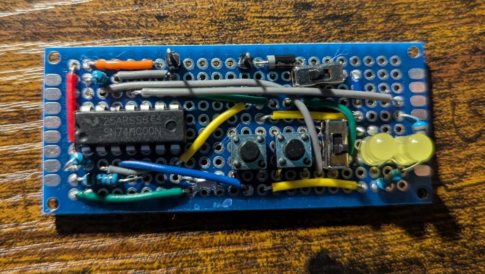
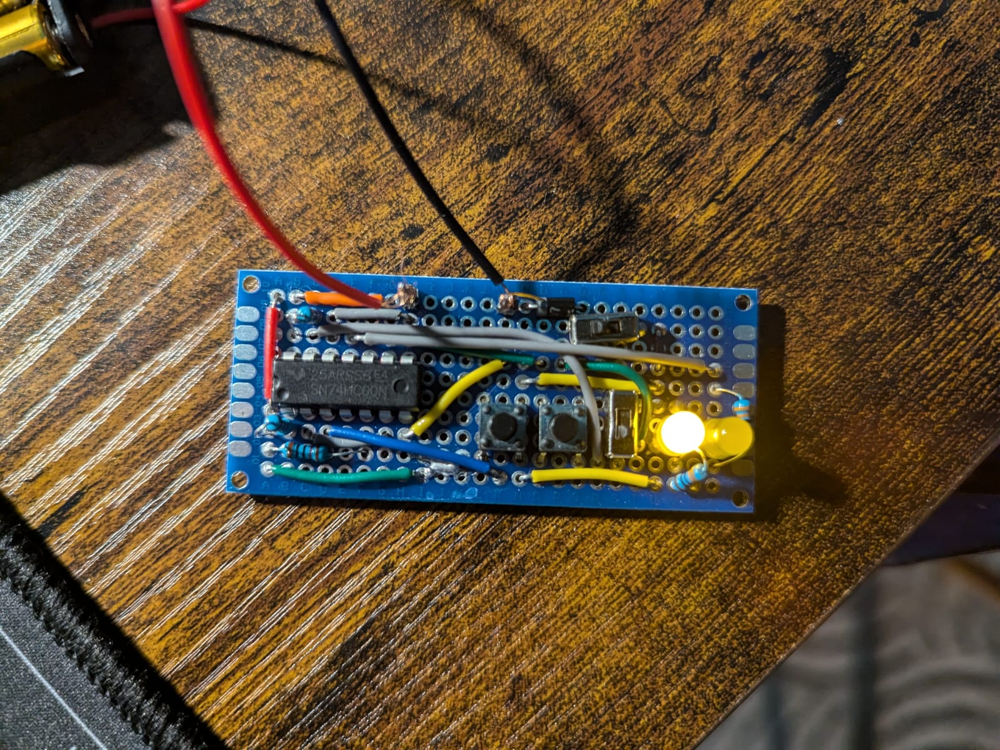
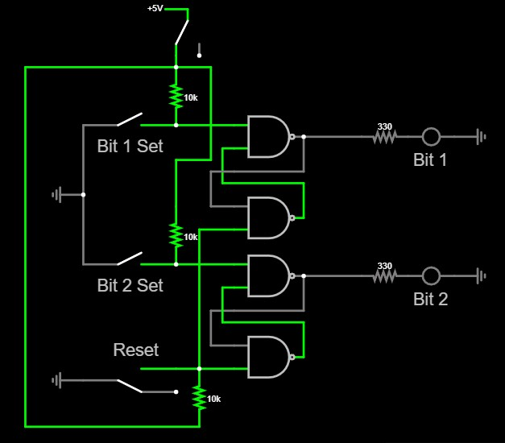

This project demonstrates the use of the 74HC00 NAND gate integrated circuit to create memory, a bit like how computer CPUs store data in registers. The 74HC00 has 4 NAND gates which can be put together to create two S/R (Set/Reset) latches, each latch can store one bit of memory. By using two latches, we can create a 2-bit memory cell that can store binary values from 0 to 3. A bit is saved when one of the Set input buttons is pressed and everything is cleared when the Reset input switch is flipped. The state of the memory is displayed using two LEDs, one for each bit. The circuit also has a power switch to turn it on and off but since the memory is volatile, data is lost when the power is turned off.

This example shows the second bit (left LED) being set to 1 while the first bit (right LED) is still 0, resulting in a binary value of 2 being stored. You can also see the two wires which supply it with 4.5V DC from 3 batteries in series. The IC technically runs faster at 5V, but the 4.5V supply is perfectly fine to power this circuit.

The schematic of the circuit shows how the NAND gates are connected to create the S/R latches and how the buttons and LEDs are wired to control and display the memory state. The schematic also shows how the two NAND gates in each latch are cross-coupled — the output of each gate feeds back into the input of the other, which is what allows the circuit to hold its state after the input is released.